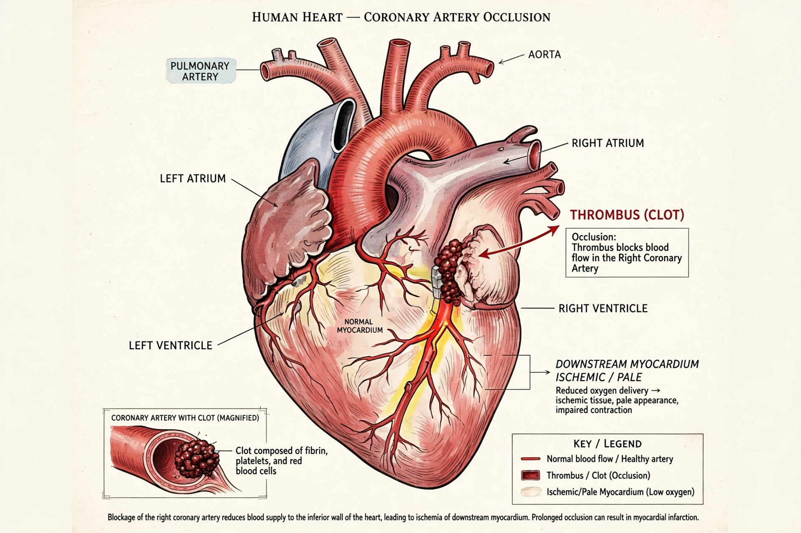

[Image placeholder: A blocked coronary artery starves heart muscle of blood]A **myocardial infarction** (**MI**), commonly known as a **heart attack**, occurs when blood flow to part of the heart muscle is blocked long enough to kill heart muscle cells (necrosis). Most MIs result from rupture of an atherosclerotic plaque in a coronary artery, triggering a blood clot (thrombus) that occludes the vessel; a minority arise from spasm, embolism or supply–demand imbalance.
Symptoms classically include central chest pain or pressure radiating to the arm, neck or jaw, breathlessness, sweating, nausea and a sense of doom — but presentations vary, and women, older people and diabetics more often have atypical symptoms; some MIs are silent. Heart attacks are a leading cause of death worldwide. Time is muscle: rapid reperfusion by thrombolytic drugs or primary angioplasty (PCI) with stenting saves myocardium. Diagnosis rests on the history, ECG (ST-elevation MI vs non-ST-elevation MI) and blood troponin. Long-term care uses antiplatelet drugs, statins, beta-blockers and ACE inhibitors, plus rehabilitation and risk-factor control.
The INTERHEART study identified nine modifiable factors — smoking, abnormal lipids, hypertension, diabetes, abdominal obesity, stress, diet, alcohol and inactivity — accounting for the great majority of MI risk worldwide. Public-health gains from smoking decline and statins have cut MI death rates sharply in rich countries since the 1970s.